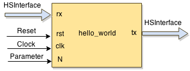

pyhdf promotes a test-driven design approach; It facilitates to a great extent the creation and execution of
design module unit tests. Below, we give details about the features and the usage of the testing facilities of pyhdf.
To ease the discussion, assume a simple hello_world module design, which has one input and one output interface (HSD type),
reset and clock inputs, and one parameter (generic):

It is important to note that the unit testing of pyhdf abstracts low-level details such as reset and clock manipulation, and data synchronization with these signals. As a result, the designer can focus more on the purpose of the test by determining input stimuli and expected results (reference data).
Module files and directory structure
Starting from a hello_world.json specification file of the module, an empty unit test template is automatically created when running command new.
$ module hello_world new
For our hello_world example design, the command will generate the following files and directories:
└── hello_world
├── hello_world.json
├── hello_world.py
├── __init__.py
├── out
├── src
│ ├── compile_list.txt
│ ├── hello_world_beh.py
│ ├── hello_world_rtl.py
│ └── __init__.py
└── test
├── hello_world.gtkw
├── hello_world_cosim.gtkw
├── __init__.py
├── t_hello_world.py
├── utest_hello_world.py
└── vectors
All the files related to testing are located in directory test.
-
The hello_world.gtkw and hello_world_cosim.gtkw files are used to visualize the timing diagrams from .vcd files (e.g., using GTKWave). The .vcd files are generated by the simulator as a result of running a test.
-
The file
t_hello_world.pyserves as a base test class, which contains information about the input and output interfaces of modulehello_world, as well as some additional info/classes. -
The file
utest_hello_world.pycontains all user-defined test. Initially, it contains only one empty test. The designer has to fill the test body and, of course, to add other test as well. This file is the only place, where the designer has to add code with regards to module testing. -
vectorsis a directory used to store files containing stimuli vectors or generated results. Providing stimuli from file is an alternative way to feed units under test with data.
Unit test structure
In this section, we focus on file utest_hello_world.py and discuss the structure of a unit test. As an example, we consider a hello_world design,
which has one input and one output interfaces (in addition to clk and reset). After running command new, the generated utest_hello_world.py
file looks like this:
import unittest from mylib import * from t_hello_world import t_hello_world class Test_hello_world(t_hello_world): '''| | The main class for unit-testing. Add your tests here. |________''' def __init__(self): # call base class constructor t_hello_world.__init__(self) # Automatically executed BEFORE every TestCase def setUp(self): t_hello_world.setUp(self) # Automatically executed AFTER every TestCase def tearDown(self): t_hello_world.tearDown(self) # @unittest.skip("") def test_000(self): """ >>>>>> TEST_000: TO DO: describe the test """ self.models = {"top":self.BEH} self.tb_params = {"N":10} self.tb_config = {"simulation_time":"auto", "cosimulation":False, "trace":False, "fdump":False, "ipgi":1, "ipgo":1} # TO DO: generate stimuli and reference data here self.run_it()
In this file, there is one empty test (test_000) generated. In every test, some configuration and module under test parameter values have to be set.
In addition, the test has to provide stimuli for each input interface, and to provide reference data (expected result) for each output interface.
Then, the test runs a simulation of the module under test using the provided stimuli and for each output interface, captures generated results.
Consequently, the structure of a test can be summarized as follows:
Test header
This includes the first 3 lines of the test. The test can be disabled by un-commenting the line at the beginning of the test:
# @unittest.skip("")
Also, there is a string which is printed before executing the test. It is used for describing the test:
""" >>>>>> TEST_000: TODO: describe the test """"
The description has to be filled by the designer of the test.
Test configuration
Configuring the test is done by assigning values to the models and tb_config maps.
- models: specifies the implementation model to be used during the test. The format is a map {"module":model}. There are 3 supported implementation models encoded in the following constants:
| Constant | Model |
|---|---|
| self.BEH | Behaviour, specified in pure Python |
| self.RTL | Register Transfer Level (RTL), specified in convertible MyHDL |
| self.VRLG | Third-party module written in Verilog (RTL) |
Using the keyword "top" as module specifies the top-level implementation model. In case of structured designs, individual sub-modules may have
different implementations used during different tests. For example, if our hello_world module contains 2 sub-modules named hello1 and world1,
then specifying the implementation models can be done as follows:
""" 'hello_world', behaviour model """ self.models = {"top":self.BEH}
""" 'hello_world', 'hello1', and 'world1', RTL model """ self.models = {"top":self.RTL}
""" 'hello_world' and 'hello1' - RTL model, 'world1' - BEH model """ self.models = {"top":self.RTL, "hello1":self.RTL, "world1":self.BEH}
- tb_params: If a module contains (static) parameters, for each test, parameter values have to be provided. The format is a map {"parameter name":value}. That is, if our
hello_worldexample module has one parameterN, assigning value10to it in the test is done as follows:
self.tb_params = {"N":10}
- tb_config: The test has the following attributes that need to be configured before running a test:
| Attribute | Description |
|---|---|
| simulation_time | The simulator runs for the specified number of clock cycles. If set to auto, the simulation time is determined by the length of the input stimuli and expected results. |
| cosimulation | If set to False, the MyHDL simulator will be used. If set to True, the unit under test is first converted to verilog, then the provided verilog simulator (icarus) is used. That is, the python test is run together with the verilog simulation. |
| trace | Enable/disable .vcd trace generation. If set to True, the corresponding .vcd file is stored in directory out. |
| fdump | If set to True, the input stimuli data and the generated results are stored to files in directory test/vectors. The files have the name of the corresponding interfaces and extension .tvr |
| ipgi | Inter-packet gap of the input stimuli. This option specifies the number of clock cycles between input stimuli. It can be 0 or greater than 0. In case of streaming interfaces (STAvln), a data packet is driven to the module without any gaps and the value of ipgi specifies the gap between the packets. |
| ipgo | Inter-packet gap of collecting results. This option specifies the number of clock cycles between capturing generated results. If set to 0, results are captured as soon as they are generated. In case of streaming interfaces (STAvln), a data packet is captured as soon as there is valid data generated. Gaps (of not capturing data) are inserted between capturing different packets. Option ipgo can be used for testing bush-back behavior. |
Input stimuli generation
The designer has to define a meaningful input data to be used as stimuli for each unit test. Generating actual data values can be done in many different ways. Below, we focus on how these values are made accessible by the module simulation.
In the unit tests of a module, to every input interface, there is a list of datas. The name of this list is the name of the input interface prefixed with stim_. The list items are {"data":value} pairs, i.e., every value is considered as interface data. For the hello_world example, which has one input interface (rx) of type HSD, assigning 10 values (30 to 39) can be done by the following code inserted after the configuration part of the unit test:
for i in range(30,40): self.stim_rx.append({"data":i})
Input stimuli to/from files
The unit test allows the input stimuli data and the generated results to be stored to files in directory test/vectors. This enables other tests to reuse already generated stimuli, submodule tests, etc...
TODO The files have the name of the corresponding interfaces and extension .tvr fdum=True.
Scheduling of stimuli TODO
Reference data generation
Similar to the input interfaces, to every output interface corresponds a list of datas which is supposed to contain reference data, i.e., expected results.
The name of this list is the name of the output interface prefixed with ref_. The list items are {"data":value} pairs. For the hello_world example,
which has one output interface (tx) of type HSD, assigning 10 values (30 to 39) can be done by the following code inserted after the configuration part of the unit test:
for i in range(30,40): self.ref_tx.append({"data":i})
In this case, we assume that the hello_world module just propagates its input to its output.
Run the test
In order the test to run a simulation and to compare the generated results with the reference data, the following function is called: run_it().
Before running the simulation, this function checks the test configuration. One of the check is with regards to the simulation time.
That is, if in the configuration, "simulation_time" has been set to "auto", a proper simulation time is determined based on the size of the stimuli and
the reference data. After running the simulation, this function checks the generated results against the expected data, i.e., the data assigned to the ref_ lists.